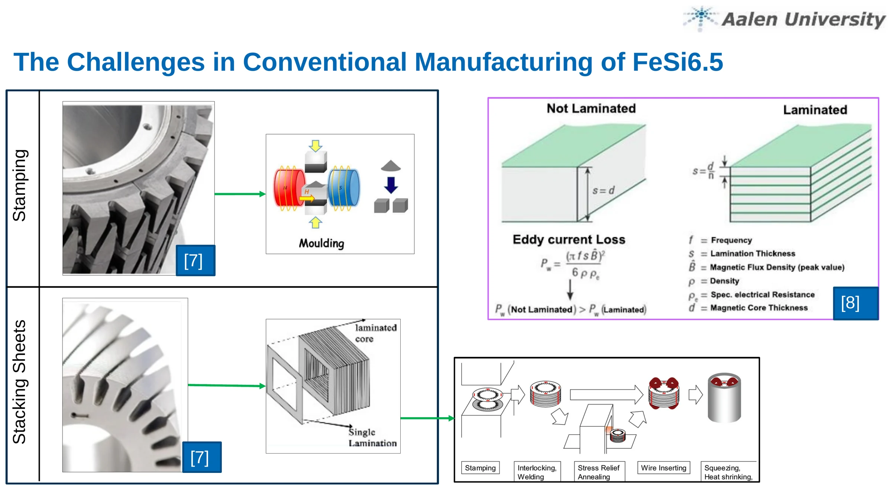
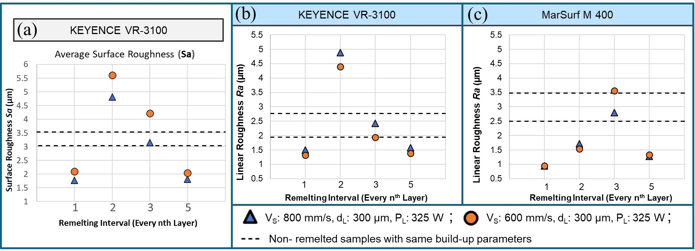
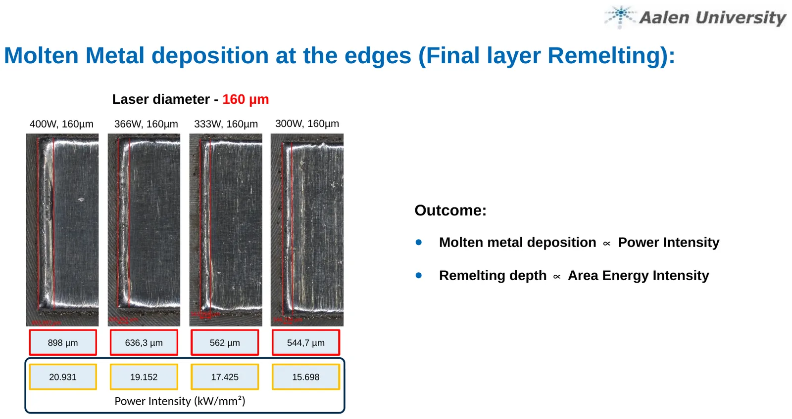
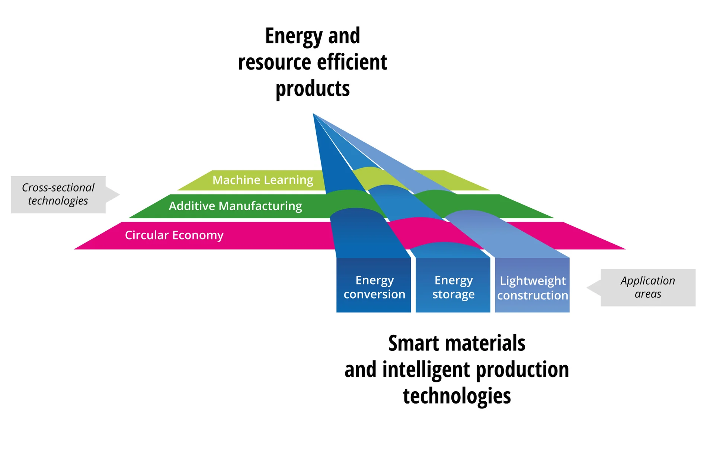

Peer-reviewed publication · Procedia CIRP 124 (2024)
Production of soft magnetic FeSi6.5 parts with precise layer topography using integrated laser remelting at PBF-LB/M
DOI: 10.1016/j.procir.2024.08.060
Developed within my M.Sc. Advanced Materials and Manufacturing thesis at the LaserApplication Center (LAZ), Hochschule Aalen, inside the SmartPro – Smart-ADD research programme.
First supervisor: Prof. Dr. Harald Riegel · Second supervisor: Prof. Dr. Dagmar Goll · Thesis submitted September 2025, defended October 2025.
What the paper reports, in plain terms
Electric motors lose energy to eddy currents. The standard fix is lamination: stack thin, individually insulated steel sheets so the current has no continuous path to flow along.
FeSi6.5 is the best alloy for that job — up to 30% lower core losses than conventional silicon steel. It is also so brittle that it shatters in a rolling mill, so it cannot be made into sheet, so almost nobody uses it. The industry designs motors around what the mill can produce rather than what the magnetic circuit wants.
3D printing never asks the material to survive being bent or stamped, so it removes that barrier — but it introduces a new one. Printed surfaces are rough, and a rough layer needs a thicker insulating coat, which makes the laminations thicker, which brings the eddy-current losses straight back.
What this paper shows: re-melting each layer with the laser a second time, in a controlled heat regime, makes the surface roughly 60% smoother without introducing pores or cracks — smooth enough to carry an ultra-thin insulating layer. Doing it repeatedly turns out to control the metal’s internal grain structure as well.
Sa 4.55 µm → 1.8 µm
from over 2.5 µm
full density retained
specimens
Why the problem is worth solving
| The EU ends new combustion-engine sales in 2035 | Every replacement drivetrain needs a soft magnetic core |
| 40–100 kg of soft magnetic material per EV motor | Magnets exceed 60% of the total mass of motors, generators and transformers |
| 40–50% of total energy losses in these machines are eddy-current losses | The single largest addressable loss mechanism |
| FeSi6.5 cuts core losses by up to 30% vs. conventional silicon steel | And it cannot be rolled, stamped or stacked — which is why nobody uses it |
The best available soft magnetic alloy is locked out of production by its own brittleness. Printing is the only route that never asks the material to survive deformation.

The four findings
1 — The surface gets dramatically smoother
Cyclic in-process remelting, held in a stable conduction melt regime, reduced areal roughness from Sa 4.55 µm to ~1.8 µm and linear roughness from Ra above 2.5 µm to below 1.0 µm — at full density, with no cracking or delamination in any sample.
2 — Grain structure becomes a setting, not an outcome
This is the novel part. Remelting is normally used simply to densify a part. Applied repeatedly, it becomes a way to engineer the microstructure: each re-melt disrupts directional solidification, driving a columnar-to-equiaxed grain transition continuously through the height of the part.
The frequency is the control knob. Remelting every layer gives a full transition; every third layer at 600 mm/s gives a partial one; every fifth layer gives essentially none. The grain structure becomes something you dial in.


3 — It does not make the alloy brittle
The decisive negative result. Heating and cooling a brittle alloy over and over should crack it. It did not. Every specimen stayed dense and crack-free and held its dimensions. Without this result the method would be a curiosity rather than a process.
4 — Two effects that look like one, separated
Molten metal building up at the part edges scales with power intensity. How deep the remelt reaches scales with areal energy intensity. Treating them as two separate levers is what made a stable processing window achievable — a single volumetric energy density figure blends them together and cannot resolve the trade-off.
That is the difference between tuning a process and understanding it.
Where it applies
| E-mobility & traction drives | Laminated rotor and stator geometries with lower eddy-current losses — including internal cooling channels and topology-optimised flux paths that sheet stacking cannot produce |
| Transformers & inductors | High-silicon-iron cores in geometries unavailable to conventional lamination |
| Electrical machine development | Rapid iteration of magnetic-circuit geometry with no lamination tooling — a genuine functional prototype route |
| Metal AM process engineering | Conduction-regime cyclic remelting transfers to any alloy where layer topography, surface finish, internal interface quality or grain morphology is the governing requirement |
| Brittle-alloy processing generally | A scalable AM route for materials that cannot survive conventional forming |
The process knowledge developed here has already supported fabrication of larger components exceeding 50 layers in ongoing university projects, validating the scalability of the optimised parameters.
What comes next
Integrate multi-material lamination with insulating phases · implement real-time melt-pool monitoring with adaptive laser control · conduct direct magnetic property testing (permeability, coercivity, core loss) · extend the approach to Fe-Co and Fe-Ni soft magnetic alloys · investigate post-build heat treatment for stress relief and enhanced magnetic softness.

Give me an alloy with no stable process and I can build the window from first principles, verify it with my own metallography, explain the mechanism rather than the correlation, and write it up to a standard that survives peer review.
The experimental detail — the three phases, the parameter matrices and the full verification chain — is on the project page.